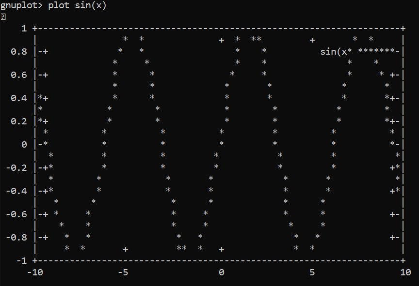

set style line 1 lc rgb '#0060ad' lt 1 lw 2 pt 7 ps 1.5lc - linecolor – цвет точек или
линий.lt - linetype – тип линий, см. картинку
ниже.lw - linewidth – ширина линий в
пикселях.pt - pointtype – тип точек, см.
картинку ниже.ps - pointsize – размер точек в
пикселях.Пример файла с данными:
# это комментарий, тут можно писать что угодно
# Блоки, разделенные двумя пустыми строками индексируются
# Блоки, разделенные одной пустой строкой не соединяются отрезками
# index 0
7 8
5 6
# index 1
5 6
7 8Команда для отрисовки данных из файла:
plot 'segments.txt' using 1:2 with linespoints linestyle 1Можно строить with lines, with linespoints, with points.
using 1:2 указывает какие колонки в
текстовом файле использовать для x и y.
Можно писать using 1:($2 * 8), чтобы
автоматически умножить вторую колонку на 8.
Можно рисовать разные блоки разными стилями:
plot 'segments.txt' index 0 with linespoints linestyle 1, '' index 1 with points linestyle 1Пустые кавычки используются, чтобы брать данные из предыдущего использованного файла.
help command_nameset size ratio -1 или set size squareset xrange [-10:10]set param; plot [0:2*pi] sin(t), cos(t)plot "ans.txt" using 1:2 smooth csplinesМожно в формате png или svg. 1
Надо написать:
set term svgset output "filename.svg"plot ...Например, для файла выше получается такая картинка:
Можно рисовать ascii-артом. Для
этого надо написать set term dumb.

И еще в куче других, но для этого надо почитать документацию.↩︎